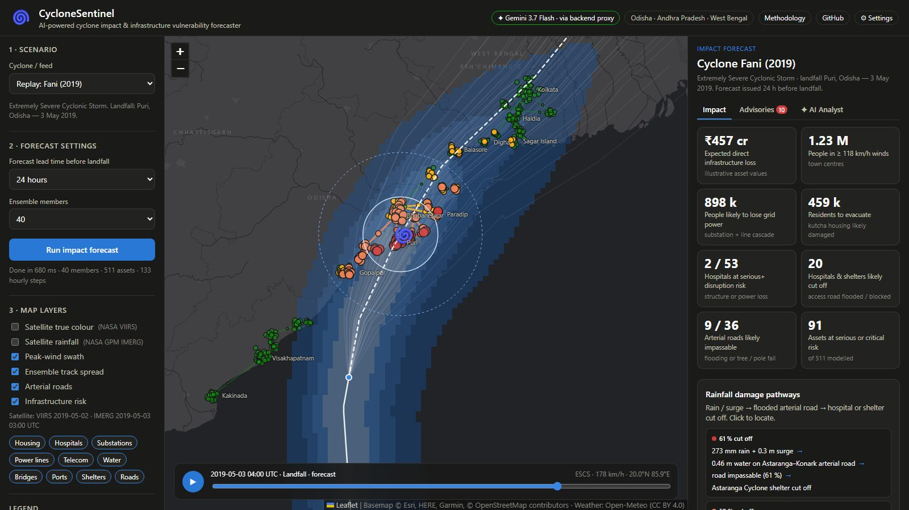
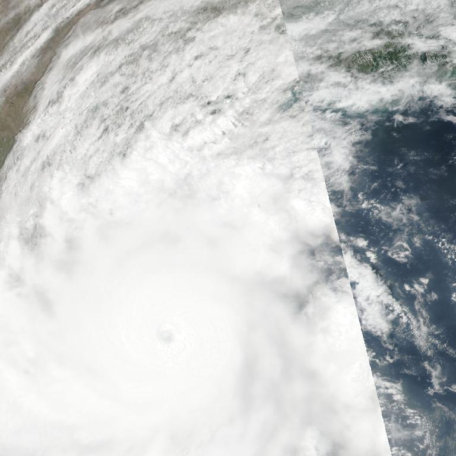
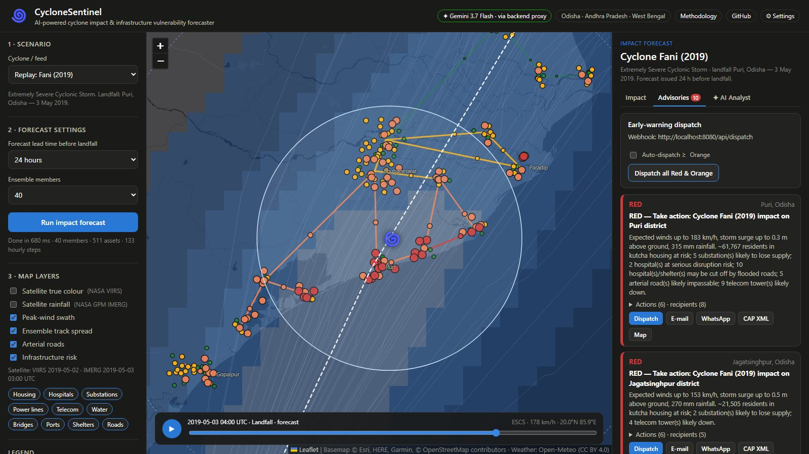
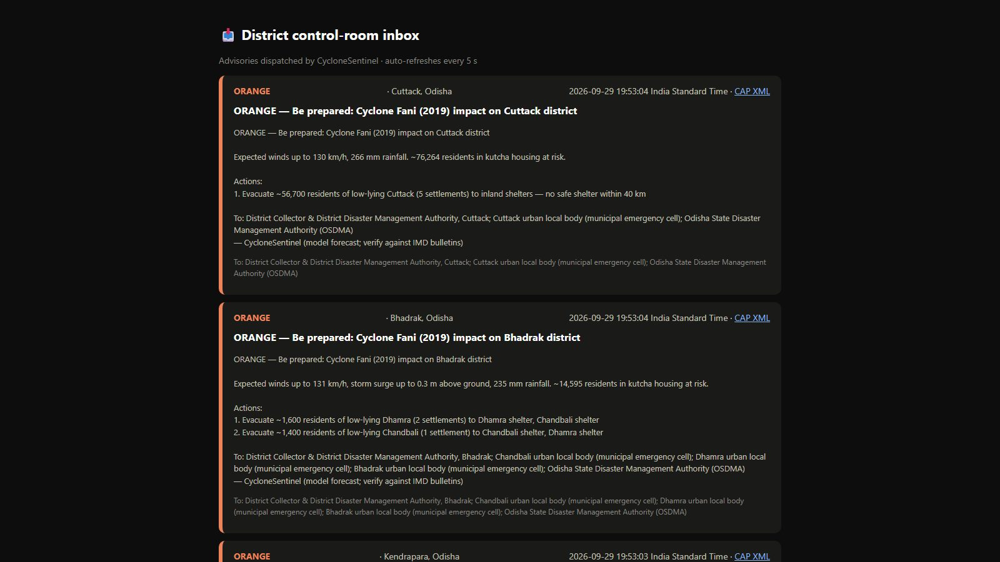

What the satellite shows
A well-defined, clear eye in the Bay of Bengal, moving towards the Odisha coast, with tight spiral bands over Puri.
Build with AI · Code for Communities · Track 5
Scroll
Predict what a cyclone will break, a day before it hits.
Cyclone warnings tell us where a storm will go. They don't tell us which hospitals lose power, which roads flood, or who must be warned. CycloneSentinel does, a full day before landfall.
By the numbers
How it works

Cascading failure
Even though the hospital building itself survives.
Wind radii and lower-risk areas
✦ Google Gemini

A well-defined, clear eye in the Bay of Bengal, moving towards the Odisha coast, with tight spiral bands over Puri.
ଲାଲ୍ ଚେତାବନୀ: ମେ ୩ ରେ ପୁରୀ ନିକଟରେ ବାତ୍ୟା ଫଣିର ଲ୍ୟାଣ୍ଡଫଲ୍। ପବନ ୧୮୩ କିମି/ଘଣ୍ଟା, ବର୍ଷା ୩୧୫ ମିମି। କୁଚା ଘରୁ ବାତ୍ୟା ଆଶ୍ରୟସ୍ଥଳୀକୁ ତୁରନ୍ତ ଯାଆନ୍ତୁ।
✓ 183 km/h · 315 mm match the model.
⚠ "44,000 kutcha houses": the model counts people. Blocked from the alert.
Early warning


Collector & DDMAState authorityPower utilityHealth officerCAP 1.2 · SACHET
Validation
Each replayed as a forecast issued 24 hours before landfall. Each time, the highest risk landed in the district that was actually hit hardest.
Landfall Puri, Odisha
Model's worst hit: Puri, Bhubaneswar, Cuttack
✓ 9.0 lakh likely without power
Landfall Sundarbans, West Bengal
Model's worst hit: Sagar Island, Haldia, Kolkata
✓ 7.5 lakh likely without power
Landfall Gopalpur, Odisha
Model's worst hit: Berhampur, Gopalpur, Rambha
✓ 3.6 lakh likely without power
Landfall Visakhapatnam, AP
Model's worst hit: Visakhapatnam, Vizianagaram, Bheemunipatnam
✓ 15.3 lakh likely without power
Before landfall.
Team Nebula Nomads · Prototype: the infrastructure inventory is synthetic, generated around 34 real towns.